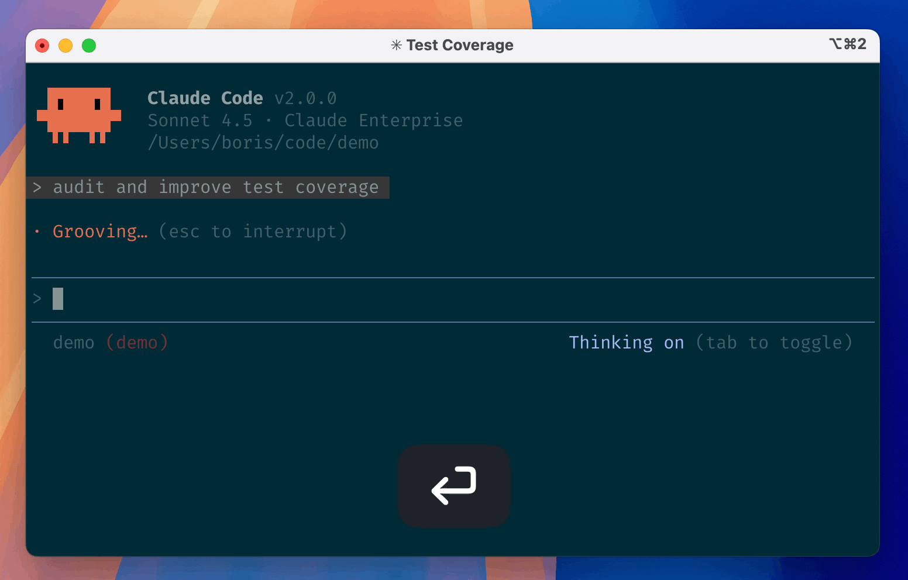
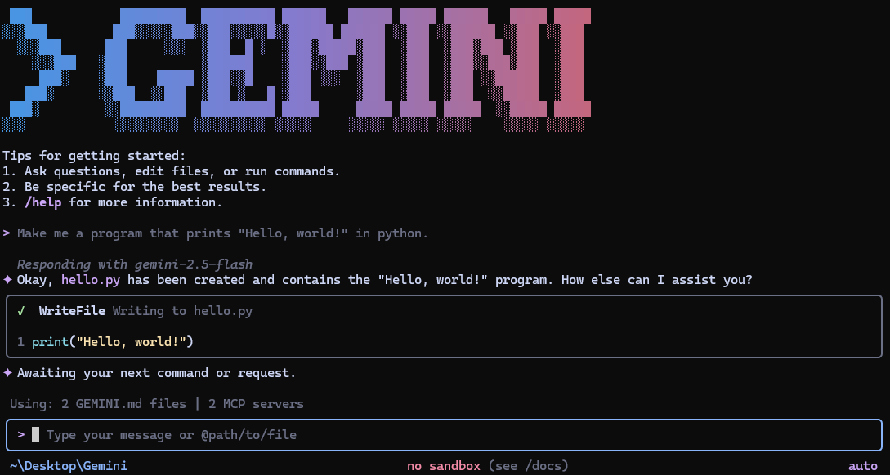

Website · FeatureRail · feature id "steering"
Three real agent CLIs, running at once — glance, steer, look away
Recreated from the actual tools, not an invented chat UI: Claude Code's dark-teal session view, Codex's boxed status header + plan checklist, and Gemini CLI's gradient wordmark + tool-call cards. All three panes render simultaneously — exactly what "look at the one that needs you" means when you have more than one agent seated.

Claude Code — anthropics/claude-code demo.gif

Codex — openai/codex splash

Gemini CLI — google-gemini/gemini-cli screenshot
The amber ring is the one that needs you — everything else keeps running in the periphery.